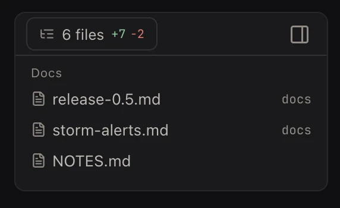
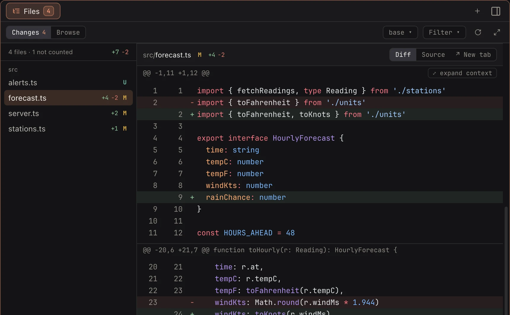
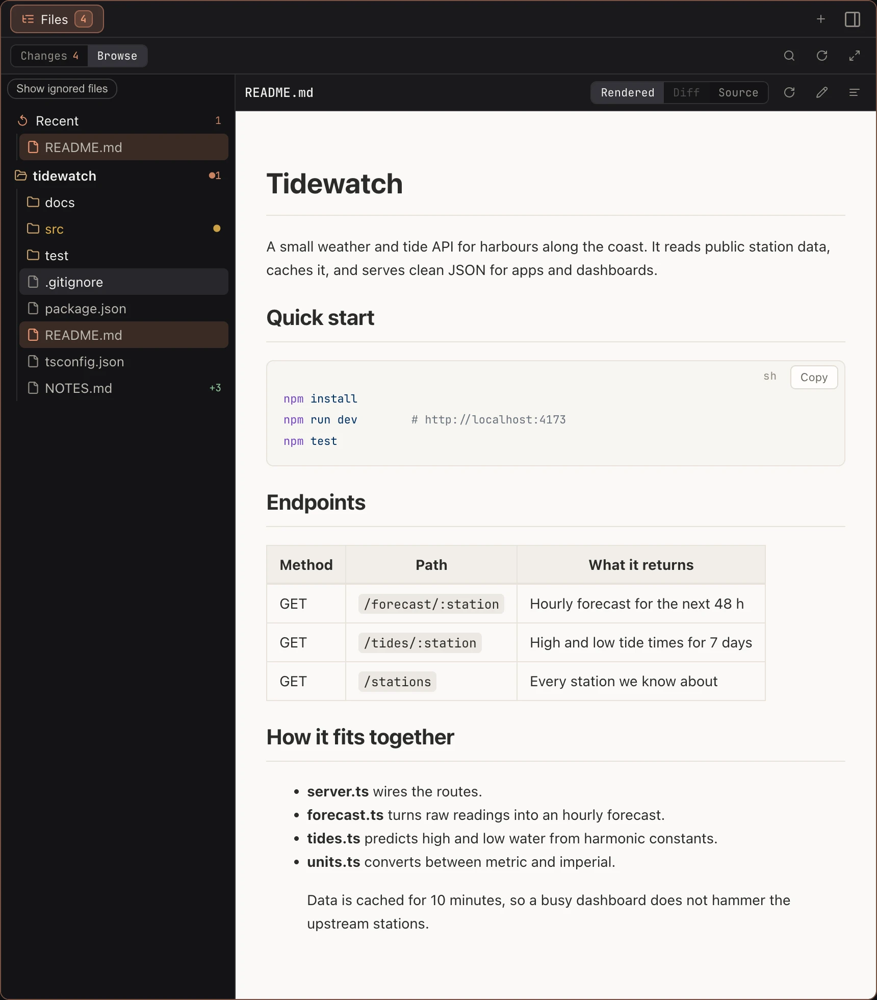
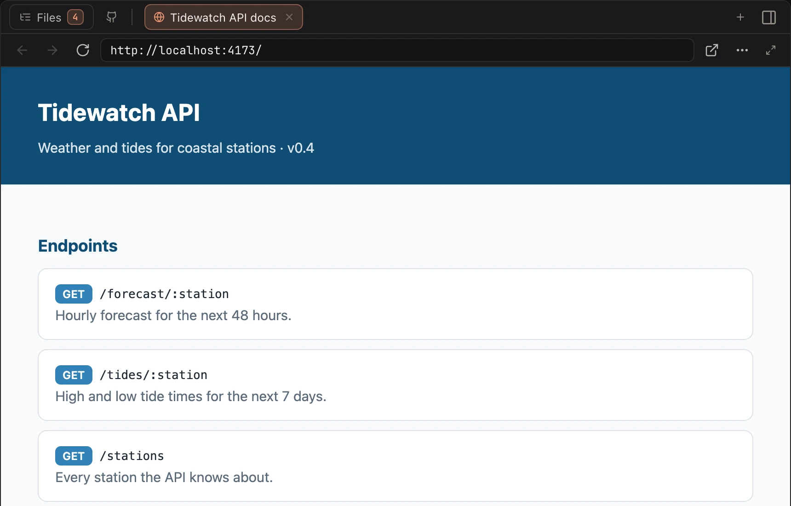
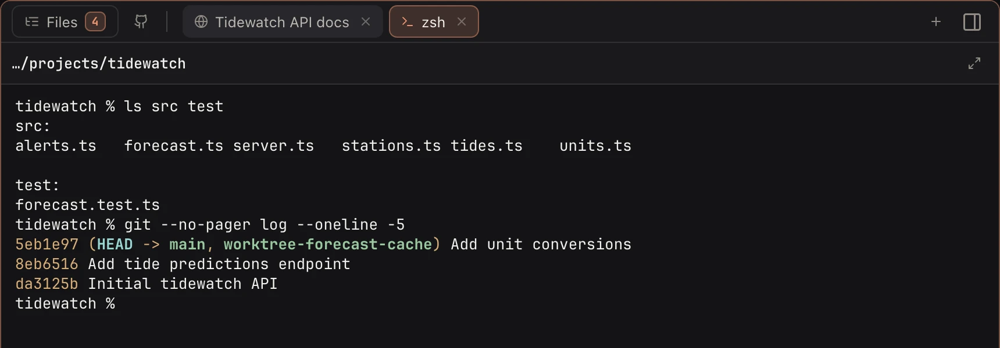
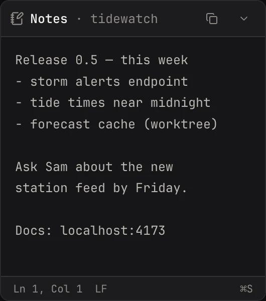

The Workbench
An agent edits files, starts a server, tells you to look at a page. In a plain terminal you open a second window for each of those, and lose track of which belongs to which chat. In Koloft every session tab has a Workbench beside it. The agent's own terminal stays untouched next to it.
The Workbench does not jump around while the agent works. Nothing follows the agent's writes by itself. A file opens when you click it, or when the agent asks for it on purpose (see agents). ⌘⏎ makes the Workbench full width and back.
Folded down

⇧⌘B folds the Workbench down to a small card beside the terminal: how many files this session changed, and the Markdown or HTML files it wrote. Click the diff line to open Changes, a file to open it.
-
Files:
N fileswith the lines added and removed, orNo changes. -
Docs: the Markdown and HTML files the agent wrote, or opened for you with
koloft open, newest first, plus the file you have open right now. The agent's own notes to itself, such asCLAUDE.md,AGENTS.mdand its skills, are left out. - A Markdown file opens in Browse, shown the way it looks. An HTML file opens as a web tab.
- When the window is too narrow for the card and the terminal both, the card hides.
A Codex session gets the same card. On a remote folder the line count catches up at most every ten seconds, and an HTML file opens as its source, not as a page.
Files ▸ Changes
The files this session touched, each with its diff right there. You read what the agent
did without typing git diff. The base switch picks what to
compare with: changes since the branch started, or only the ones not committed yet.
Each hunk (one block of changed lines) has ✎ comment in its header. Click it,
write a note, press ⏎: the file path, the hunk and your note land in the
session's input box, not sent. You read it over and press ⏎ there. The same in
a Codex session and on a remote folder. While the session waits for your OK on something,
or has ended, the button is greyed and says why.

Files ▸ Browse
The whole folder as a tree. A switch shows the files git ignores too. Once a Claude session writes to its scratchpad (its own folder for working files), that folder shows here too, on a remote machine as well.

File tabs
- Markdown, images and PDF, shown the way they look. An HTML file opens as a web tab.
- the diff, or the plain source
- an editor: ⌘S saves. If the file changed on disk meanwhile, it will not quietly write over it. If the session ends while a file is not saved, a box asks at once: Keep for later, Discard or Save.
Web tabs
A real browser, not a preview. Logins stay, downloads work, popups open, and Chrome
extensions run. When the agent runs open <url>, the Workbench opens on
that page, and your cursor stays in the terminal. If the agent's session is not the one on
screen, you are not pulled over: the page waits in front when you click that row. A page
you open with ⌘-click lands in the background with an unread dot, and so does
one an agent opens while driving the browser (see agents).
Neither is loaded until you click it. Eight tabs per session; a ninth pushes out the one
you used longest ago.
Typing in the address bar suggests this project's pages first, the ones you visit most on top (up to six).

Terminal tabs
While the session is running, ⌃` opens a shell in its folder (up to eight). Run a test or check git there, and leave the agent's terminal to the agent.

The GitHub button
In a GitHub project a GitHub button sits next to Files. Click it to open the branch's pull request in a web tab, or the repo page when there is none yet. When the branch has a pull request, the button shows its number and a dot: green, its checks passed; amber, still running; red, one failed. Right-click it for more:
- Open repository
- Open pull requests
- Open pull request #… (when there is one)
- Checks · N failing of M (or passed, or running)
- Send failing checks (under Checks, when one fails) — puts each failing check's name, its link and the log around its first error into the session's input box, unsent, the same way as a hunk comment
- Commit… — a small box for your message; it commits every change not committed yet, new files too
- Push
- Open pull request… (when there is none yet) — pushes, then opens GitHub's compare page in a web tab
- Check again
The checks need gh (GitHub's command-line tool) signed in; without it the
line says Checks · install gh or Checks · run gh auth login. The
same on a Codex session. On a remote folder the commit and push
run on the remote machine, and gh runs on your Mac.
The note
One plain-text note per folder. Sessions come and go; the note stays.

What it won't do
-
follow the agent's writes(a file opens when you or the agent ask) -
cover the agent's terminal(it sits beside it) -
show a Codex scratchpad(only Claude sessions have one)
next page -> Agents can use Koloft too